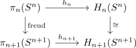

hurewicz homomorphism between spheres as isomorphism
Proposition
The \(n\)-th hurewicz homomorphism for the n-sphere is an isomorphism.
Proof
\begin{align*}
\pi_1(S^1) \rightarrow H_n(S^n)
\end{align*}
$n = 1$
calculating fundamental group
$n \geq 2$
follows from the Hurewicz Homomorphism and suspension where
